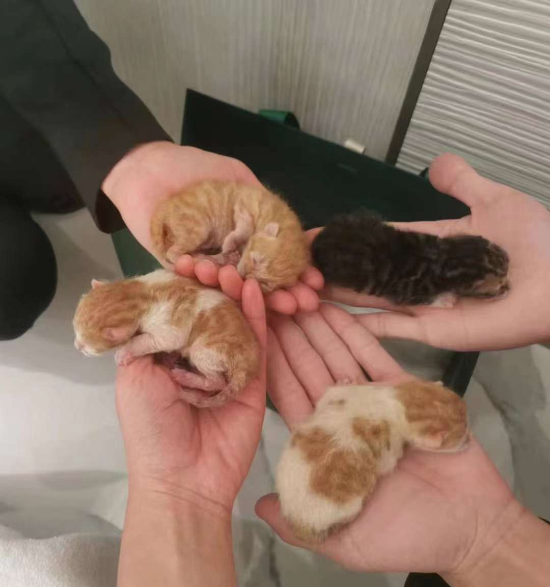

Bacon Q Dog

Bacon Q. Dog is a 9yr old labradoodle. He prefers to spend his days lounging among the three different beds/couches that his family has gifted him. He enjoys a walk or two around the neighborhood, as long as he can pretend that he doesn't see any of the other animals to avoid the embarrassment of not wanting to admit he has no wolf-like skills in chasing them.
At night just as the rest of the family is ready to relax, Bacon suddenly wants to release all of his energy. He will place his toys on a mini couch and frantically drag the couch around, giving his toys "a ride." There is also a lot of rolling. Lots and lots of rolling.
Photo Gallery


Likes
- Belly rubs
- Playing tug-of-war
- Sneaking onto the couch
Fitz

Loves chasings tennis balls, chipmunks, squirrels, and birds. Often found sitting by the fire in wintertime, and in sun patches when available. He’s energetic, mischievous, and easily bored. He loves people and gets grumpy if left without a lap too long.
Loves barking up trees, running around on the lawn, and digging in the dirt looking for moles. He especially likes getting treats and whines when he comes inside and doesn’t get a snack.
Photo Gallery


Likes
- Blankets
- Being warm
- Barking
Rocket

Rocket (also named huihui) is a 6-month pomeranian puppy with big eyes and a small, black cute nose. Rocket is named rocket because he runs so fast and energetic all day without even having some rest. Rocket loves to carry his little toy walking around the house and jumping towards my bed.
Rocket is friendly to all human beings. He will be a little shy at first, but will ‘say hi’ to you after a few seconds. He is also friendly to dogs, especially the small breed, because the large size dogs are hard for him to smell lol. If you meet rocket, don’t hesitate to say hi to him!! He will be super happy the whole day.
Photo Gallery


Likes
- Chewing bones
- Running
- Chasing
Pluto

4.Pluto is a five year old rescue dog of an unknown breed. He was found wandering alone and taken to the Valley Humane Society where he found his new family. From a young age, Pluto always had a special personality, he was known for being very very lazy! He spends most of his time staring out the window to keep watch of his house. Don’t let the laziness fool you because Pluto defends his family from the mailman and squirrels every single day.
5.Aside from his job as defender of the house, Pluto likes to have fun. Pluto’s favorite part of the day is his daily walk. Sometimes he even gets to go to the park and meet his neighbors. He also loves his toy duck, and only his toy duck. As a dog, it's in his nature to hunt and so he makes sure to get some practice with his toy duck.
Photo Gallery


Likes
- Eating his bone
- Going to the beach
- His toy duck
Cody

Cody is a 7yr old Pembroke Corgi. He was born in Cavalier Farms, Seattle. He prefers to spend his days lounging on the bean bag. Every day, he enjoys two walks around the neighborhood and likes to make friends with other doggie friends. If lucky enough, he might see the cyclist, but he is not allowed to give chase.
5.Cody loves traveling. He enjoys walking on the beach and taking sun naps. But he hates cold weather. He would like to stay at home lounging by the fireplace in winter.
Photo Gallery


Likes
- Traveling
- Lounging
- Tennis balls
Brul
Brul is a 2yr old Maine coon cat. She prefers to spend his days lying in the bed. She enjoys watching outside from the window as long as there are no loud noises and bugs outside.
Brul loves walks on the beach and taking sun naps on a warm summer day. Brul is a playful cat but enjoys having slow, relaxed days at the same time. She hates grooming and bathing.
Photo Gallery


Likes
- Eating
- Sleeping
- Scratches
Sprout

Sprout, a shy and elusive kitten when he first arrived at four months old, gradually became an affectionate companion. He enjoyed sleeping on my bed, but his early morning wake-up calls at 6:30 AM were a daily routine.
During my challenging academic phase, Sprout became my constant companion during late-night drawing sessions, quietly curling up on my lap, providing comfort and banishing solitude.
Photo Gallery



Likes
- Egg
- Playing with Naer and my tennis string
- Sleeping in the sunshine